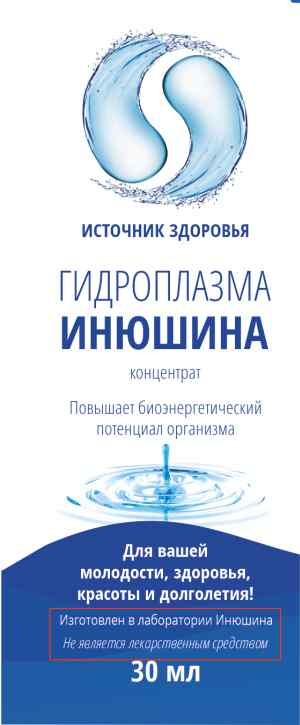
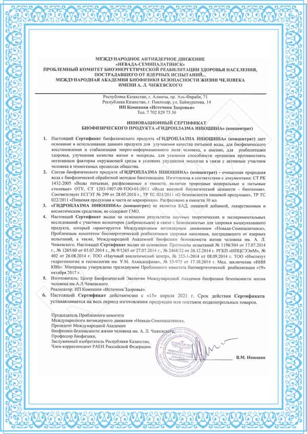
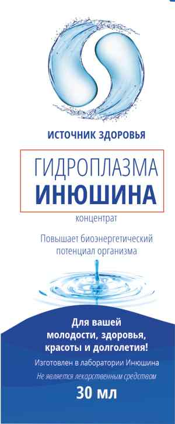

Оригинальная гидроплазма Инюшина
Где производят оригинальную гидроплазму Инюшина?
Вы знаете, что такой продукт как гидроплазма, продают кроме нашей компании "Источник Здоровья" ещё несколько других компаний, название продукта у каждой компании разное, упаковки, цены, в том числе и ассортимент продукции. Некоторые попадают в замешательство и не могут понять, где оригинальный продукт, а где аналоги.
Разберёмся в этом вопросе.
Сразу внесём важное уточнение, последние несколько лет, с 2019 года, компания «Источник Здоровья», является единственной кто реализует продукцию производимую лабораторией Инюшина. Если вам будут говорить, что продают такой же продукт, с лаборатории Инюшина, можете быть уверенными, это ложь, и вас намеренно, вводят в заблуждение, дезинформируя.
Понятие гидроплазма Инюшина имеют два значения, и каждый понимает его по-своему, как продавец, так и покупатель.
В первом случае продукт "гидроплазма Инюшина" понимается как продукт разработчика, изобретателя, то есть аналог, который не производится в его лаборатории.
Во втором случае, как продукт производителем которого является Инюшин, в его собственной лаборатории, то есть оригинальный продукт.
Под аналогом имеется ввиду продукт, который производится в другой лаборатории с разрешения Инюшина, но он, не несет никакой юридической ответственности за качество и безопасность продукции других производителей лабораторий и компаний реализаторов, и не принимает претензий по поводу качества и безопасности продукта, все претензии направляйте производителю, указанному на упаковке продукта и реализующей его компании.
Как же отличить оригинальный продукт от аналога, произведённого в другой лаборатории?
Первый важный момент отличия оригинального продукта лаборатории Инюшина от аналога, это то, что на упаковке продукта производитель указан лаборатория Инюшина, а не какой то другой производитель. Да так и написано, производитель лаборатория Инюшина.
Второе, к продукту должен прилагаться инновационный сертификат с подписью Инюшина Виктора Михайловича.
Третий важный момент, в названии, в заголовке, продукта должна использоваться фамилия разработчика, Инюшина В. М. Не название на английском языке или еще как то, именно в названии, заголовке, а не упоминаться в описании. Например: "Гидроплазма Инюшина", "Пирамида Инюшина", "Биотермион Инюшина" и т. д.
Четвертый важный момент, в гидроплазме лаборатории Инюшина не содержится никаких дополнительный растительных или биодобавок. По причине того, что бы продукт не потерял статус гипоаллергенного, не имеющего побочных эффектов и противопоказаний.
Поэтому что бы понять правду нужно следовать строго правилу, "что не написано то не правда", а написано кто производитель, должно быть в документах и на упаковке как мы выяснили, а не устные утверждения, которые могут оказаться ложными.
Ну и конечно у вас возник вопрос, как же так получается, разработчик Инюшин один, а продают продукцию другие. Дело в том, что Инюшин дал право на производство и продажу нескольким лабораториям, на данный момент в 2024 году продукт аналогичный производится ещё в 2 лабораториях, Каждый производитель в описаниях продукта должен упоминать его фамилию как разработчика и владельца авторских прав, что не редко и вводит людей в заблуждение.
Напрашивается вопрос, какой продукт лучше, оригинал или аналог?
Сотрудники нашей компании задали этот вопрос Виктору Михайловичу, как первооткрывателю гидроплазмы, изучающему этот продукт десятки лет, разработавшему технологию ее производства, и имеющему на данный момент только в своей лаборатории самую передовую технологию производства, которой нет ни у кого, и оборудование для производства в том числе.
Неужели производимый в лаборатории Инюшина продукт не является самым лучшим?
Виктор Михайлович говорит, что не может так уверенно заявлять как учённый, так как это будет ложью. Что бы уверенно делать такое заявление, что гидроплазма производимая в его лаборатории самая лучшая, нужно провести сравнительные клинические испытания продуктов разных производителей, с его продуктом, для этого нужны группы добровольцев для испытаний с разными проблемами здоровья, и эти исследования должны проходить не один месяц, а возможно и годы что бы точно всё выяснить. Учитываться должны не несколько отдельных показателей, а множество, и на дистанции времени проведения испытаний каждый продукт покажет свою эффективность. Но такие клинические испытания никто не проводил, и, в связи с этим я как академик ученный точно не могу утверждать, что мой продукт самый лучший, так как это не является научно доказанным фактом, что в принципе можно сказать и о продуктах других производителей.